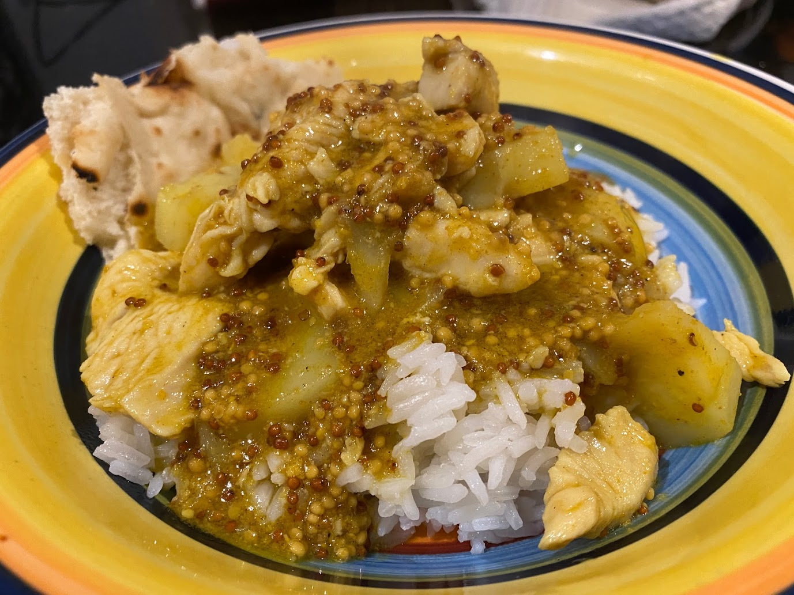

Honey Chicken Curry
 Meat
Meat

1chicken breasts
Cut up the chicken breasts and brown a bit in pan/wok.
1 cupmelted butter1/2 bottlewholegrain mustard~1/2 cuphoney4 tbspcurry powder
Make sauce from melted butter, wholegrain mustard honey and curry powder.
Add sauce to chicken and cook until chicken is done
somecashews1 canlentils
Add cashews and lentils or chickpeas.
Serve with rice and naan